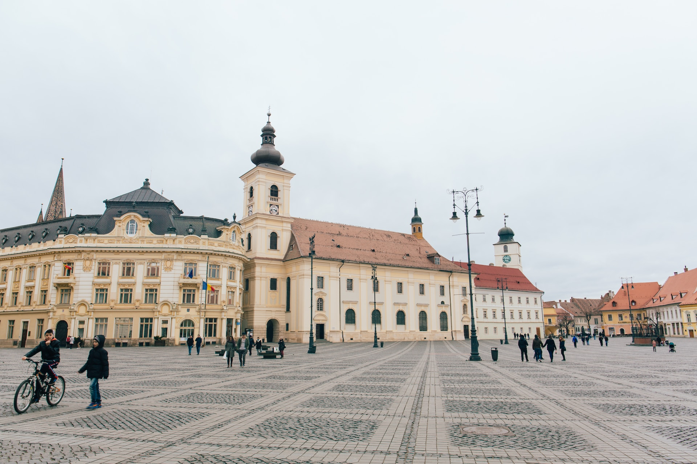
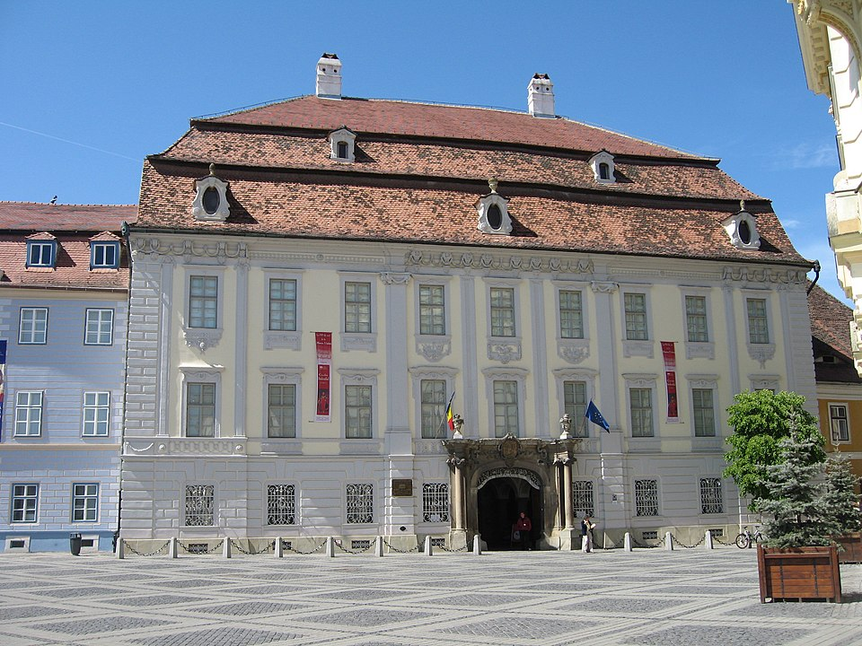

Sibiu
Bine ați venit în Sibiu!
Welkom in het charmante Sibiu, een stad doordrenkt van geschiedenis en culturele pracht.Gelegen in het hart van Transsylvanië, Roemenië, biedt Sibiu een unieke mix van architectonische pracht, levendige festivals en een gastvrije sfeer.
Verken de geplaveide straten van de oude stad en bewonder de prachtige gotische, barokke en renaissancistische gebouwen.
Bezoek de Grote Markt, waar de majestueuze Brukenthal-paleis en de kleurrijke huizen van de Council Tower samenkomen.
Sibiu heeft ook een bloeiende culturele scene.
Geniet van theater- en muziekvoorstellingen in het beroemde Radu Stanca Nationaal Theater.
Mis de jaarlijkse Sibiu International Theatre Festival niet, waar artiesten van over de hele wereld samenkomen om te schitteren in een viering van podiumkunsten.
Voor geschiedenisliefhebbers is het ASTRA Museum van Volksbeschaving een must-visit.
Hier kun je traditionele Roemeense huizen en ambachtelijke workshops verkennen en meer te weten komen over de rijke cultuur en tradities van het land.
Laat je betoveren door de betoverende schoonheid van Sibiu, waar elke hoek een verhaal vertelt en elke stap je meeneemt op een reis door de tijd.
De must-sees van Sibiu
Piața Mare
Ontdek de historische charme van de Grote Markt in Sibiu, het bruisende hart van de stad.
Bewonder de kleurrijke huizen met hun oogverblindende architectuur, bezoek het imposante Brukenthal-paleis en geniet van de gezellige sfeer terwijl je ontspant op een van de vele terrasjes.
Ontdek de historische charme van de Grote Markt in Sibiu, het bruisende hart van de stad.
Bewonder de kleurrijke huizen met hun oogverblindende architectuur, bezoek het imposante Brukenthal-paleis en geniet van de gezellige sfeer terwijl je ontspant op een van de vele terrasjes.


Muzeul Național Brukenthal
Duik in de kunstwereld van Sibiu in het Brukenthal National Museum.
Dit museum herbergt een indrukwekkende collectie Europese kunst, waaronder schilderijen, sculpturen en decoratieve kunst.
Laat je betoveren door meesterwerken van beroemde kunstenaars en geniet van de prachtige historische setting.
Duik in de kunstwereld van Sibiu in het Brukenthal National Museum.
Dit museum herbergt een indrukwekkende collectie Europese kunst, waaronder schilderijen, sculpturen en decoratieve kunst.
Laat je betoveren door meesterwerken van beroemde kunstenaars en geniet van de prachtige historische setting.
Complexul Național Muzeal "ASTRA"
Ontdek de rijke Roemeense cultuur en tradities in het ASTRA Museum van Volksbeschaving.
Wandel door het uitgestrekte openluchtmuseum en bewonder traditionele huizen, molens en ambachtelijke werkplaatsen.
Leer over het dagelijks leven van vroegere generaties en dompel je onder in de fascinerende folklore van het land.
Ontdek de rijke Roemeense cultuur en tradities in het ASTRA Museum van Volksbeschaving.
Wandel door het uitgestrekte openluchtmuseum en bewonder traditionele huizen, molens en ambachtelijke werkplaatsen.
Leer over het dagelijks leven van vroegere generaties en dompel je onder in de fascinerende folklore van het land.

Accommodatie
Tijdens je verblijf logeer je in het Hotel Casa Luxemburg.
De accommodatie werd voor het eerst gebouwd op de vestingwerken van de stad en is een van de oudste gebouwen met een rijke geschiedenis.
De kamers van dit hotel hebben een barokke gevel en bieden een schilderachtig uitzicht op de Liar's Bridge, een must-see voor elke toerist.
Ze zijn uitgerust met alle moderne faciliteiten en er is gratis WiFi beschikbaar.
De accommodatie werd voor het eerst gebouwd op de vestingwerken van de stad en is een van de oudste gebouwen met een rijke geschiedenis.
De kamers van dit hotel hebben een barokke gevel en bieden een schilderachtig uitzicht op de Liar's Bridge, een must-see voor elke toerist.
Ze zijn uitgerust met alle moderne faciliteiten en er is gratis WiFi beschikbaar.
De treinreis
Helaas is het nog niet mogelijk om binnen één dag met de trein richting Sibiu te reizen.U hebt de keuze om in één keer richting Sibiu te reizen met de nachttrein vanaf Wien of om de reis af te leggen in meerdere etappes.
In één keer
U legt de reis in één lange ettape af.
Op de eerste dag reis je overdag vanaf Brussel-Zuid in de richting van de Oostenrijkse hoofdstad Wien.
In Wien stap je vervolgens op de nachttrein met als eindbestemming București, deze neemt u tot Mediaș waar u na een ruime overstaptijd van 2,5 uur (genoeg tijd voor een uitgebreid ontbijtje) verder reist richting Sibiu.
U legt de reis in één lange ettape af.
Op de eerste dag reis je overdag vanaf Brussel-Zuid in de richting van de Oostenrijkse hoofdstad Wien.
In Wien stap je vervolgens op de nachttrein met als eindbestemming București, deze neemt u tot Mediaș waar u na een ruime overstaptijd van 2,5 uur (genoeg tijd voor een uitgebreid ontbijtje) verder reist richting Sibiu.
Gesplitst over 3 dagen
Zin om Sibiu maar te bezoeken, maar tegelijkertijd geen zin om 26 uur op de trein te zitten?
Dan kunt u kiezen om de reis te splitsen over 3 dagen met overnachtingen onderweg in München en Budapest.
De heenreis verloopt als volgt:
De terugreis verloopt als volgt:
Zin om Sibiu maar te bezoeken, maar tegelijkertijd geen zin om 26 uur op de trein te zitten?
Dan kunt u kiezen om de reis te splitsen over 3 dagen met overnachtingen onderweg in München en Budapest.
De heenreis verloopt als volgt:
- Dag 1: vertrek in Brussel om 10:25, aankomst in München om 17:06.
- Dag 2: vertrek in München om 09:29, aankomst in Budapest om 16:19.
- Dag 3: vertrek in Budapest om 09:10, aankomst in Sibiu om 19:48.
De terugreis verloopt als volgt:
- Dag 1: vertrek in Sibiu om 09:38, aankomst in Budapest om 18:50.
- Dag 2: vertrek in Budapest om 09:40, aankomst in München om 16:32.
- Dag 3: vertrek in München om 10:51, aankomst in Brussel om 17:35.

Prijzen
Deze reis is beschikbaar vanaf €x,- per persoon.Inbegrepen in de prijs zijn de heen- en terugreis, 3 overnachtingen ter plaatse inclusief ontbijt en BTW.
Op verzoek kan de reisduur steeds uitgebreid of ingekort worden.
Boek je reis via ons boekingsformulier en wij sturen je zo snel mogelijk een reisvoorstel.